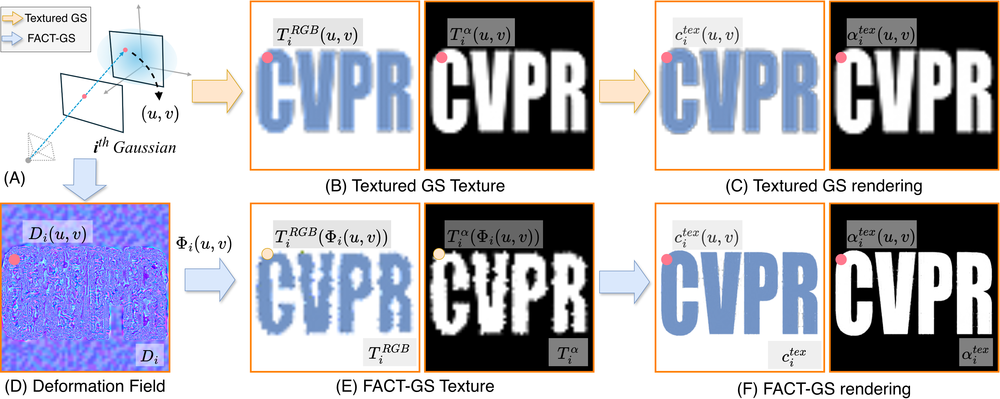
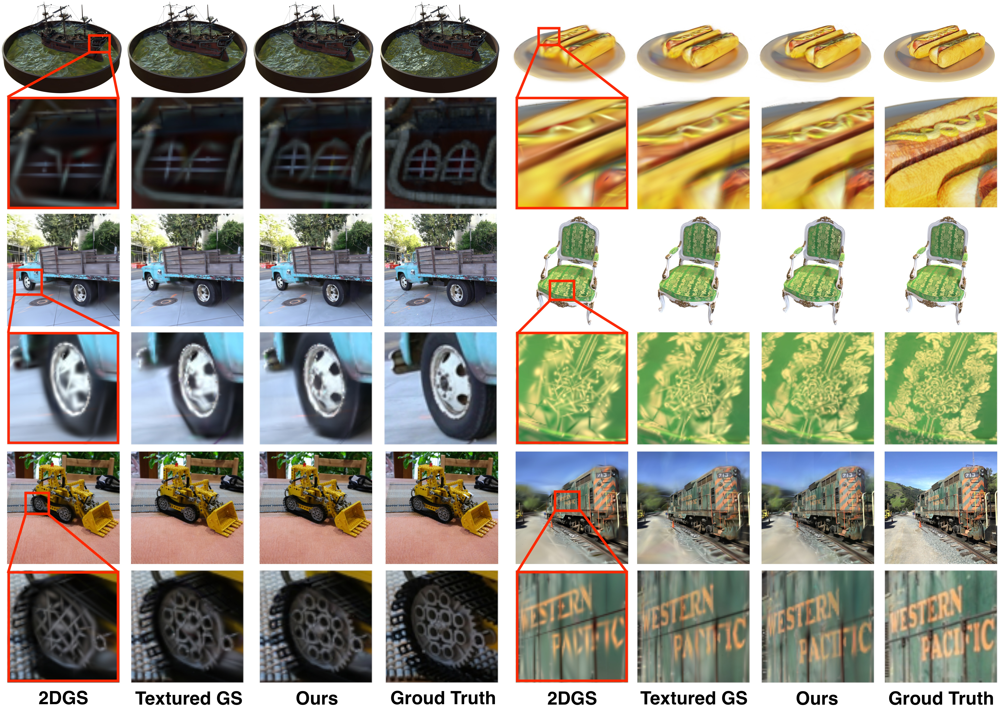

Realistic scene appearance modeling has advanced rapidly with Gaussian Splatting, which enables real-time, high-quality rendering. Recent advances introduced per-primitive textures that incorporate spatial color variations within each Gaussians, improving their expressiveness. However, texture-based Gaussians parameterize appearance with a uniform per-Gaussian sampling grid, allocating equal sampling density regardless of local visual complexity. This leads to inefficient texture space utilization, where high-frequency regions are under-sampled and smooth regions waste capacity, causing blurred appearance and loss of fine structural detail. We introduce FACT-GS, a Frequency-Aligned Complexity-Aware Texture Gaussian Splatting framework that allocates texture sampling density according to local visual frequency. Grounded in adaptive sampling theory, FACT-GS reformulates texture parameterization as a differentiable sampling-density allocation problem, replacing the uniform textures with a learnable frequency-aware allocation strategy implemented via a deformation field whose Jacobian modulates local sampling density. Built on 2D Gaussian Splatting, FACT-GS performs non-uniform sampling on fixed-resolution texture grids, preserving real-time performance while recovering sharper high-frequency details under the same parameter budget.


The source code of this project is based on some amazing projects: